Регистрация и работа в системе
Регистрация в системе
Вход на сайт
На странице https://el.istu.edu/ введите номер студенческого билета (или номер зачетной книжки) в поле логин и фамилию на кириллице (на русском) с большой буквы в поле пароль, например, Иванов. Нажмите «Вход».
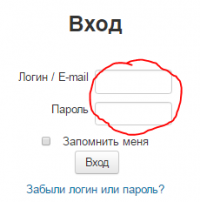
Ввод email и пароля
Введите новый пароль и email (будьте внимательны при вводе). Нажмите «Обновить профиль».
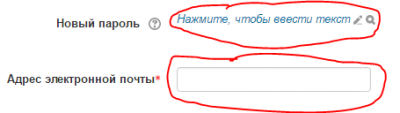
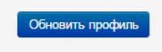
Подтверждение адреса почты
На указанный адрес электронной почты придет письмо. Перейдите по ссылке в письме.
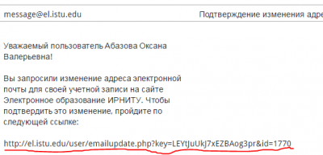
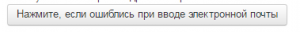
Завершение регистрации
Регистрация завершена, нажмите «в начало» или на заголовке сайта чтобы перейти на главную страницу. Вы увидите курсы, на которые Вас зачислили преподаватели.
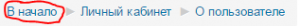
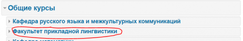
Загрузка файла в задание
Вход в задание
Зайдите в задание, в которое необходимо загрузить ответ.
Добавление ответа
Нажмите кнопку «Добавить ответ на задание».
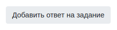
Загрузка файла
Нажмите кнопку «Добавить ответ на задание» и перетащите нужный файл на поле «Ответ в виде файла».
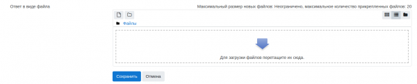
Сохранение
Дождитесь окончания загрузки файла и нажмите на кнопку Сохранить.
Подключение к видеоконференции
Переход к видеоконференции
Для того, чтобы подключиться к видеоконференции, необходимо перейти в элемент видеоконференции.
Выбор группы участников
Обязательно выберите в видимых группах Все участники.
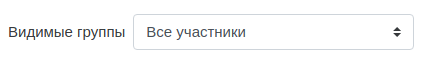
Подключение
После чего нажмите кнопку Подключиться к сеансу.
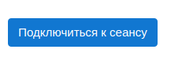
Часто задаваемые вопросы
Как быстро добавить вопросы в банк вопросов
Простой тип вопросов (одиночный выбор)
Подготовьте файл, аналогичный по форматированию: скачать пример. Для сохранения правильной кодировки лучше вносить изменения в скачанный файл, а не создавать новый.
- расширение txt
- не содержать кавычки
- буквы ответов (A,B,C и тд.) и слово «ANSWER» должны быть заглавными
- на каждый вопрос может быть только один правильный ответ
- после букв ответов следует точка «.» или закрывающая скобка «)»
- текст вопроса должен быть в одну строчку
На странице курса в блоке «НАСТРОЙКИ» выберите «Банк вопросов»→«Импорт».
На открывшийся странице выберите «Формат файла»→«Формат Aiken», укажите категорию для импорта и добавьте подготовленный файл с вопросами в «Импорт вопросов из файла», нажмите «Импорт».
Если импорт прошел успешно, на следующей странице вы увидите сообщение о количестве добавленных вопросов. Нажмите «Продолжить». Вопросы добавляются в банк вопросов, который впоследствии можно использовать для наполнения тестов.
Сложные типы вопросов (множественный выбор и др.)
Для сложных типов вопросов доступен формат GIFT, описание в курсе Изучаем Moodle и документации:
Как быстро добавить термины в глоссарий
Подготовка таблицы
Подготовьте таблицу, в которой 1й столбец - термин, 2й - определение, 3й - категория (опционально).
Пример:
| Moodle | система управления курсами, представляет собой свободное веб-приложение, предоставляющее возможность создавать сайты для онлайн-обучения. | |
| Массовый открытый онлайн-курс | обучающий курс с массовым интерактивным участием c применением технологий электронного обучения и открытым доступом через Интернет, одна из форм дистанционного образования. |
Конвертация и импорт
Скопируйте получившуюся таблицу по ссылке в поле «Таблица Excel», нажмите «Конвертировать», скопируйте получившийся текст из поля «XML код» в новый файл с расширением .xml (при сохранении файла убедитесь что выбрана кодировка UTF-8).
Создайте элемент «Глоссарий» и в блоке «Настройки» выберите «Импорт записей», загрузите .xml файл и нажмите «Отправить».
Как включить отслеживание выполнения элементов курса
Как работает отслеживание
Индикация выполнения ключевых элементов используется, если в настройках курса включено «Отслеживание выполнения», и для ключевых элементов курса опция «Отслеживание выполнения» установлена в значение «Отображать элемент курса как пройденный, при выполнении условий» а также отмечены пункты «Требуется просмотр» и «Требуется оценка» (при наличии).
Визуальная индикация
Если для элемента выбран вариант «Отображать элемент курса как пройденный, при выполнении условий» то на главной странице курса справа от него будет отображаться пунктирный квадрат. Если выбран вариант «Студенты могут вручную отмечать элемент курса как выполненный» (использование данной опции не приветствуется) квадрат будет нарисован сплошной линией.
Отчеты и ограничения доступа
В отчете «Завершение элементов курса» представлена информация по завершению элементов курса студентами.
Также при использовании отслеживания выполнения становится возможным ограничение доступа к элементам на основании выполнения других элементов. Например можно ограничить доступ к тесту пока не будет прочитана лекция, либо сделать недоступным раздел пока не будут выполнены задания предыдущих разделов. Для ограничения доступа в настройках элемента или раздела заполните поле «Ограничить доступ», выбрав «Завершение элемента».
Как изменить пароль от аккаунта
Если вы забыли пароль и не можете войти в систему
На странице http://el.istu.edu/ нажмите «Забыли логин или пароль?» и следуйте инструкциям на экране.
Если вы вошли в систему под своим аккаунтом
Нажмите на ваше имя в правом верхнем углу сайта, затем выберите «Настройки», «Редактировать информацию». Заполните поле «Новый пароль», затем нажмите «Обновить профиль».
Какие роли возможны у пользователей
Основные роли
Пользователь зачисляется на курс с определенной ролью.